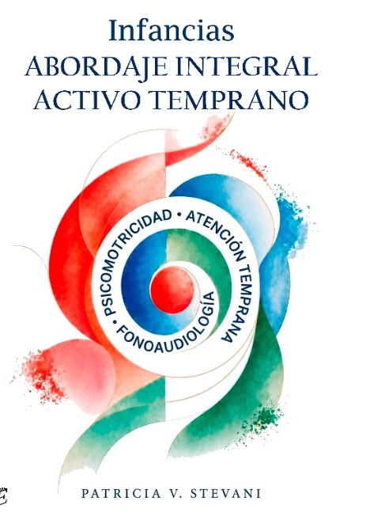

Psicomotricidad
Cuerpo, movimiento y juego
Una propuesta para mirar las infancias desde la integración, el respeto por la singularidad y el acompañamiento temprano.

Un enfoque
Tres disciplinas que se articulan para acompañar el desarrollo infantil desde una perspectiva humana, ética e interdisciplinaria.
Cuerpo, movimiento y juego
Comunicación, lenguaje y voz
Desarrollo, vínculos y potencialidades
La integración activa entre estas áreas potencia el desarrollo infantil respetando la singularidad de cada niño y niña, y fortaleciendo sus entornos significativos.
Fonoaudiólogos, psicomotricistas, terapeutas, psicólogos, pediatras y otros profesionales.
Docentes, orientadores y equipos educativos de todos los niveles.
De carreras vinculadas a la salud, la educación y el desarrollo infantil.
Madres, padres y cuidadores que desean comprender y acompañar mejor.
Sobre el libro
⚘ Basado en sólidos marcos teóricos y en una praxis comprometida.
☷ Propuestas de intervención éticas, reflexivas y centradas en cada niño y su propio recorrido.
♡ Un recurso valioso para el trabajo interdisciplinario y la construcción de entornos más sensibles.

“ Cada niño y niña nos invita a mirar el mundo desde otra perspectiva.
Dejanos tus datos y te contactamos con la información para conseguirlo.